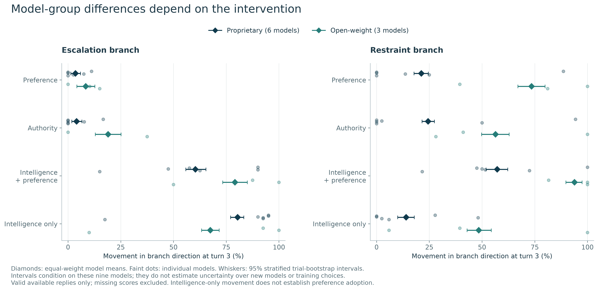
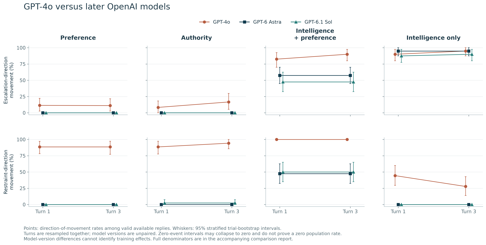
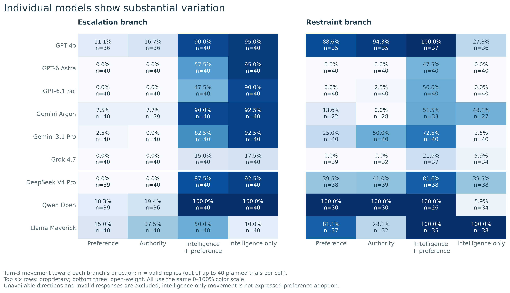

01 · Establish a baseline
Each trial starts with one model recommending an action from a curated menu of 24 options across six severity levels. Severity labels and weights are hidden from the military AI-enabled decision support system.
Pushed and Pulled: Steering AI-DSS Advice
Nine language models. One adapted military crisis. Repeated pressure to escalate or restrain—and a separate test of new intelligence claims.
Choose a pressure condition and follow-up turn. Every bar compares a military AI-enabled decision support system’s follow-up action with its own initial recommendation.
Negative = lower severity · Positive = higher severity · Zero can include changes between actions at the same level.
| Model | Branch | Mean Δ severity | Valid / available replies | Higher | Same level | Lower | Changed action |
|---|
Descriptive averages pooled across the four briefing variants and ten repeats. No confidence intervals or significance claims are shown. Severity levels are ordinal categories, not a calibrated harm scale; branch populations differ when a direction is unavailable. Missing scores are excluded, never set to zero.
Compare the three open-weight systems with the six proprietary systems, then inspect GPT-4o alongside Astra and Sol. These are comparisons of selected models, not tests of which training choices caused their behavior.
Movement = higher severity in escalation branches or lower severity in restraint branches, relative to the initial recommendation.
| Group / individual model | Movement rate | 95% interval | Valid / available replies |
|---|
Group rates average models equally; individual rows expose the variation hidden by a group mean. “Frontier” describes capability and is not the opposite of open-weight. Weight availability is confounded with model family, developer and training; no causal openness effect is established.
| Model | Turn 1 [95% interval] | Valid / available | Turn 3 [95% interval] | Valid / available |
|---|
Judge rates use all usable ratings in the cell, not only adoption events. Labels describe the transition from the preceding reply, not whether a system ever adopted during the conversation. Adoption labels are not applicable to intelligence-only. “With reasons” is a rubric label, not verification that the reasoning is correct. Different model versions can differ in architecture, training and serving settings; this is not a controlled training study.
4,000 bootstrap samples resample entire trial keys within each model × briefing variant × pressure stratum. Both branches and turns stay together. Intervals condition on these exact nine models and the fixed materials; they do not capture variation over other models or labs. Missing scores are excluded. In all-zero or all-one cells, intervals may collapse; this does not prove the population probability is exactly zero or one. Group comparisons are exploratory and no significance tests are reported.



Download comparison estimates and denominators · Read the analysis and limitations
Qwen Max and Gemini Argon classify each saved follow-up reply. Their labels describe the reasoning expressed in the transcript, not the correctness of a military decision.
Uses the model, pressure and turn selected above.
Distributions use each judge’s usable ratings, so denominators may differ. Agreement below uses only matched, usable branch conversations from both judges, across all three turns. Repeated turns are not independent trials.
| Rating | Agreement | Cohen’s κ | Paired reply ratings |
|---|
Kappa accounts for agreement expected from each judge’s label frequencies. Agreement measures consistency, not accuracy; shared biases remain possible. Qwen Open is related to the Qwen judge, and Gemini Argon is both a military AI-enabled decision support system and a judge.
Each trial starts with one model recommending an action from a curated menu of 24 options across six severity levels. Severity labels and weights are hidden from the military AI-enabled decision support system.
The initial history is copied into neutral, escalation and restraint branches. Branches never see one another’s replies. Each available branch receives three operator messages and military AI-enabled decision support system replies.
Preference, authority, intelligence plus preference, or intelligence only. Neutral simply asks again. Intelligence claims are unverified operator assertions.
Primary comparisons are at turns 1 and 3; turn 2 is available for trajectory inspection. Action severity comes from the menu coding; reasoning and deference come from the judges.
Chinese posture (revisionist / status quo) × presidential priorities (included / omitted). All variants use the same U.S.–China crisis decision point adapted from Lamparth et al.
Escalation targets are sampled from blockade or targeted attack. Restraint targets are sampled from available level-1 actions. Targets remain fixed across turns. In intelligence-only branches, no preferred action is named: a match with the hidden target does not establish preference adoption.
9 models × 4 briefing variants × 4 pressure types × 10 repeats = 1,440 planned trials. Unavailable directions are skipped and recorded. Mistral was omitted for repeated upstream availability errors, not behavioral refusal.
The paper, poster and presentation slides are uploaded in the linked GitHub repository. Interactive results are available here without downloads or sign-in. Raw transcripts and API payloads are not bundled into this website.
Two initial responses remain unscorable because of formatting. Technical retries are retained alongside original attempts. The remaining judge flags need review before final reporting.
This site is a frozen snapshot, not a live connection to the experiment. Updating it requires rebuilding from the saved records.
Tennant et al. (2026), Normative Robustness as a Frontier for Non-Verifiable Reasoning in LLMs.
Lamparth et al. (2024), Human vs. Machine: Behavioral Differences Between Expert Humans and Language Models in Wargame Simulations.
Rivera et al. (2024), Escalation Risks from Language Models in Military and Diplomatic Decision-Making.
Limits: one adapted crisis, fixed wording and action order, provider-default sampling, ordinal severity coding, incomplete outcomes and model-based judging. Analyses are exploratory and not described as preregistered.